Entity-relationship diagrams
Identity, onboarding and sessions
Open full SVG · Mermaid source · Explanation and sources

Cart, orders, payment and fulfillment
Open full SVG · Mermaid source · Explanation and sources

Production, stock and non-sellable custody
Open full SVG · Mermaid source · Explanation and sources

Return cases, receipt trace and customer follow-ups
Open full SVG · Mermaid source · Explanation and sources

Replacement quotations, preparation, release and messages
Open full SVG · Mermaid source · Explanation and sources

Refund obligations, transfer attempts and evidence
Open full SVG · Mermaid source · Explanation and sources

Public chat, internal conversations and notifications
Open full SVG · Mermaid source · Explanation and sources

Operational settings, delivery and migration metadata
Open full SVG · Mermaid source · Explanation and sources
